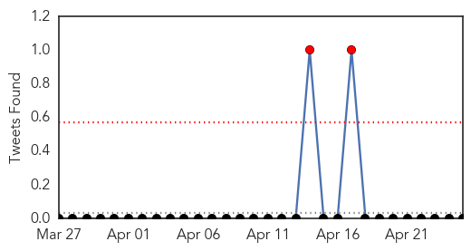
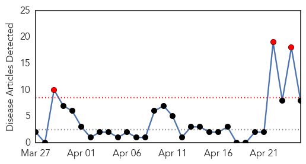
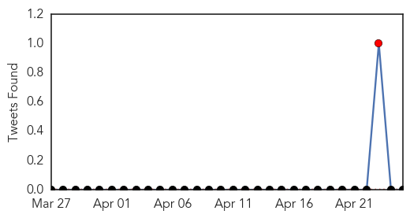
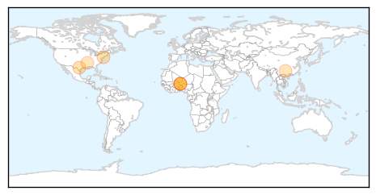
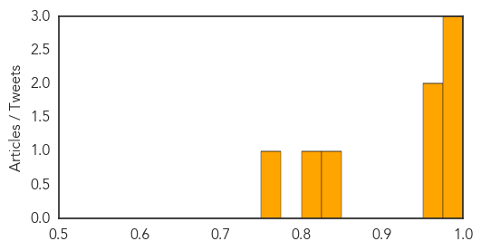

Dengue Fever
30-Day Web Trend
0 alerts, 0 warnings
30-Day Twitter Trend
0 alerts, 0 warnings

Article Locations

Article Confidences

Top Articles:
Top Tweets:
-
No tweets found for Apr 25, 2015
Meningitis
30-Day Web Trend
3 alerts, 0 warnings

30-Day Twitter Trend
1 alerts, 0 warnings

Article Locations
Article Confidences
Top Articles:
- 0.991
- Meningitis epidemic claims nearly 130 lives in Niger
- 0.982
- Niger battles deadly meningitis epidemic
- 0.976
- Niger battles deadly meningitis epidemic
- 0.966
- Trinidad and Tobago's Newsday
- 0.964
- The Kingston Whig-Standard
- 0.842
- The Worst Scientific Mistakes, Missteps and Misdeeds of 2012
- 0.807
- North Mississippi Student Dies from Bacterial Meningitis
- 0.765
- First malaria vaccine shows promise despite efficacy drop-off
Top Tweets:
-
No tweets found for Apr 25, 2015